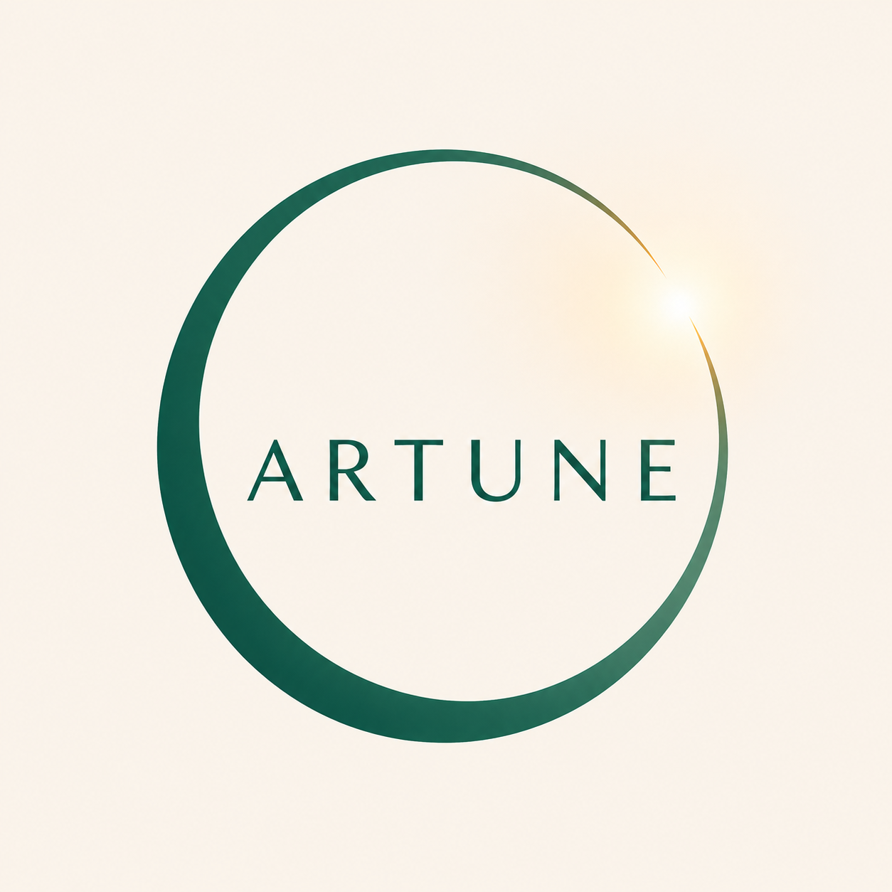
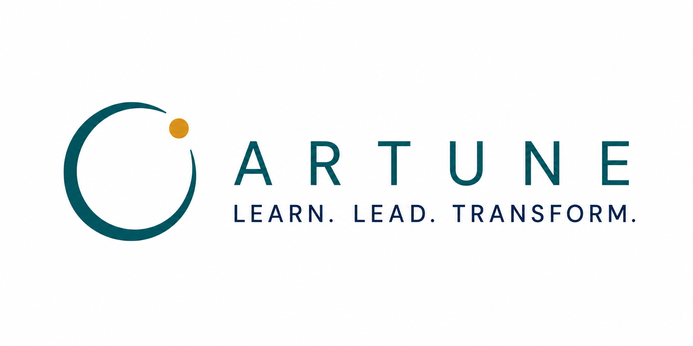

Mindfulness & Awareness
Develop attention, presence, and the capacity to respond rather than react.

Artune Explore the CourseLearn. Lead. Transform.
Artune helps people cultivate awareness by integrating psychology, neuroscience, systems theory, systems psychodynamics, mindfulness practice, and leadership development.

Every moment, we are making meaning. We interpret what we see, fill in what we do not, and respond through patterns shaped by our biology, psychology, relationships, culture, and systems.
Artune exists to help people notice those patterns more clearly, so they can respond with greater awareness, intention, and effectiveness.
Explore
Artune brings together multiple disciplines to help people understand themselves, others, groups, organizations, and the systems that shape human experience.
Develop attention, presence, and the capacity to respond rather than react.
Explore the inner patterns that shape perception, emotion, identity, and behavior.
Understand the brain and nervous system as foundations for learning and change.
See individuals, groups, and organizations as interconnected living systems.
Notice participation, authority, role, anxiety, conflict, and belonging in groups.
Lead with greater awareness in complex human systems and changing cultures.
Understand how people grow, change, reflect, and make meaning over time.
Featured Course
A systems-informed approach to noticing, making sense of, and responding to what emerges in groups.
Designed for facilitators, educators, consultants, coaches, and leaders who work with groups where influence matters more than formal authority.
Member PortalPractice
Awareness is not only conceptual. It is developed through attention, reflection, mindfulness, and repeated practice.
MBSR-informed practices for attention, regulation, and presence.
Questions that support meaning-making, inquiry, and deeper seeing.
Applied practices for groups, teams, classrooms, and communities.
Journal
Future articles will explore mindfulness, systems thinking, group dynamics, neuroscience, leadership, learning, and organizational life.
A short reflection on awareness, observation, and the practice of noticing patterns as they emerge.
About Artune
The name reflects a lifelong practice of learning to see more clearly: ourselves, one another, and the systems we participate in.
Ara's work brings together education, facilitation, mindfulness practice, systems psychodynamics, organizational development, group relations, adult learning, and leadership development.
Contact
Receive reflections, resources, and updates as the Artune learning ecosystem grows.